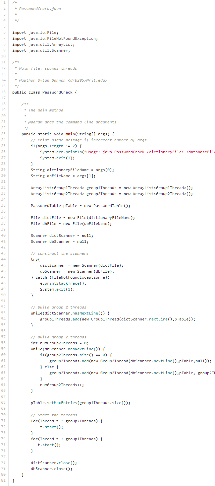
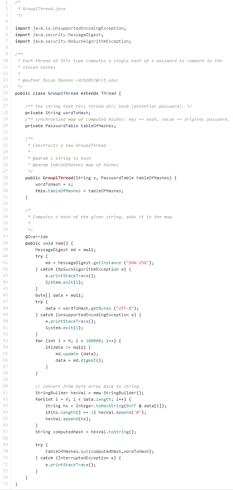
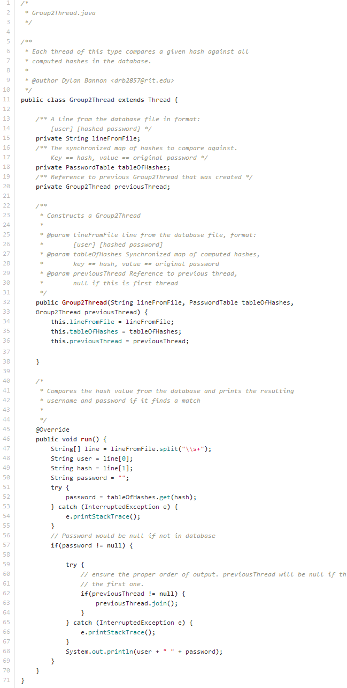
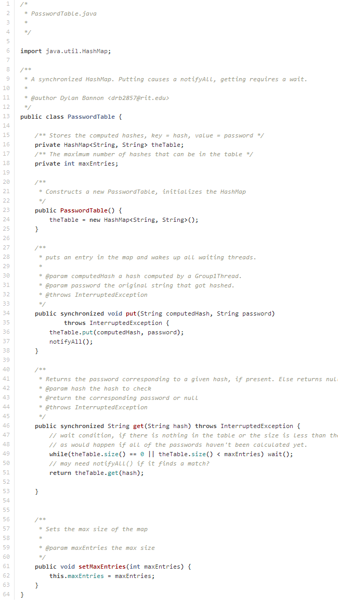
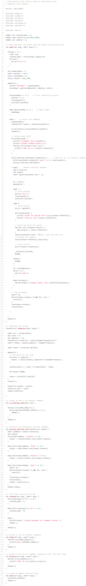

Multithreaded Dictionary Attack
This was the first project for my Concepts of Parallel and Distributed Systems class. This program (written in Java) carries out a dictionary attack in order to crack the passwords of a theoretical website that had their hashed passwords stolen. The idea is that a website, who hashes their passwords with 100000 executions of SHA-256, has had their hashed passwords and corresponding usernames stolen. My program attempts to find the string that hashes to each of the stolen hashes. The design of the program is as follows:
There are two types of threads, Group 1 and Group 2. The job of the Group 1 threads is to take a string from a file containing a number of common passwords and hash it using the same algorithm as the target website, and store it in a synchronized hash table. The Group 2 threads are given one of the stolen hashes and checks if it is in the synchronized hash table. If it is in the hash table, the thread prints out the username and its corresponding plaintext password.
The key was to make sure that the hash table shared by all of the threads was synchronized, so that no two threads could enter the critical sections at the same time. This ended up being fairly simple to implement in Java. I made a wrapper class for a Java HashMap that had two methods of interest, put() and get(). Both have the synchronized keyword, preventing more than one thread from entering each method at the same time. put() calls notifyAll() after putting the hash and username into the HashMap, and get() waits while the HashMap is empty or contains fewer than the maximum number of elements. The source code is below:
PasswordCrack.java:
Group1Thread.java:
Group1Thread.java:
PasswordTable.java:
My Interactive Shell
MISH is a fairly simple interactive UNIX shell implemented in C
using the fork/exec pattern. It has a number of internal commands
that are handled by the shell itself, and any other command is dispatched
to the path and executed by the machine. If the command cannot be found
or some other error occurs, the user is notified and execution continues
if it was not a fatal error.
The internal commands include:
verbose {on/off}:
Turns verbose mode on or off. Verbose mode displays valuable information about
each command as it executes (command name, token list, process ID)
help:
Displays all available internal commands.
history:
Displays all commands that have been executed in this instance of MISH.
quit:
gracefully exits the program.
To launch from the command line:
mish {0/1} // 0 defaults verbose mode to on, 1 to off.
First, the program handles the command line args, turning verbose mode on or
off accordingly. Then, it enters the main control loop. In the loop, it first
processes the user input by parsing it into a list of tokens. Then it checks
if the command was an internal command, responding appropriatley if it was.
If not, the system assumes it was an external command and forks, creating a
new process, and the child process calls execvp on the command.
I used a top-down approach to the design of the program, starting with the
user input and basic control loop, adding funtionality piece-by-piece (saving
the annoying parts for last...) The source is below.
mish.c
Postfix Math Interpreter
[page under construction]
Generic Puzzle Solver
[page under construction]